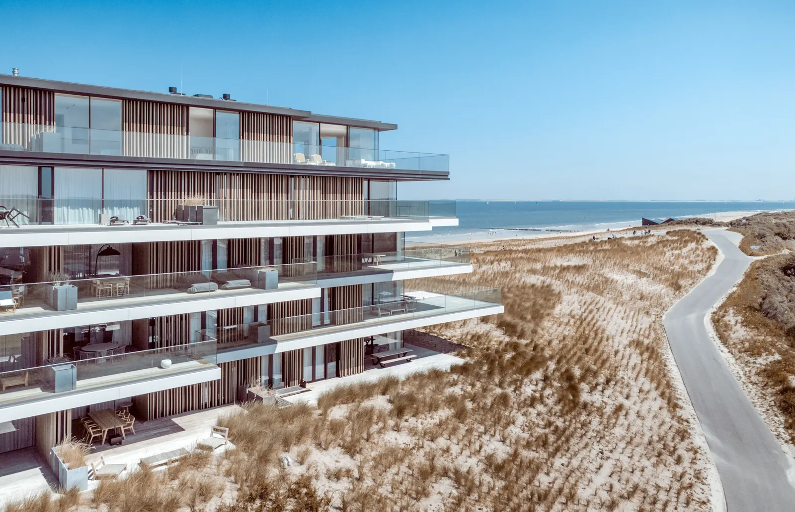

Localização
Rua 3.100
A praia no fim da rua. O resto da cidade a pé.
O terreno fica no Centro de Balneário Camboriú, entre a Avenida Brasil e a Avenida Atlântica, a 300 metros da praia central. Toque nos pontos do mapa para ver as distâncias.
Distâncias a pé, saindo da portaria
O que há por perto
Praia e lazer
- Praia central300 m
- Calçadão da Atlântica4 min
- Molhe da Barra Sul2,1 km
- Parque Unipraias (bondinho)2,8 km
Compras
- Mercado 24 h200 m
- Padaria e café150 m
- Atlântico Shopping4 min
- Farmácia 24 h250 m
Escolas e saúde
- Escola e creche450 m
- Colégio de ensino médio700 m
- Hospital1,6 km
- Clínicas e laboratórios500 m
Transporte
- Terminal de ônibus urbano9 min
- Rodoviária2,4 km
- Aeroporto de Navegantes25 km
- BR-1013 km
Restaurantes
- Restaurantes na Av. Brasil150 m
- Bares da orla350 m
- Feira de orgânicos (sábado)600 m
- Rua gastronômica 3.300800 m
Temporada
- Diária média, 3 suítesR$ 2.400
- Diária média, 2 suítesR$ 1.500
- Ocupação no verão82%
- Ocupação no ano58%
Distâncias aproximadas medidas em mapa. Valores de temporada são médias de referência para o Centro de BC e não garantem renda de aluguel.

A rotina a pé
Sem carro de segunda a sexta
Mercado, padaria, farmácia, duas escolas e o terminal de ônibus urbano ficam a menos de 10 minutos de caminhada. A Avenida Brasil concentra bancos, restaurantes e o comércio de rua do Centro.
Na temporada, o carro fica na garagem: o Centro tem o melhor acesso a pé da cidade, e a praia central é a mais estruturada, com salva-vidas o ano todo.
Central de vendas · 9h às 20h